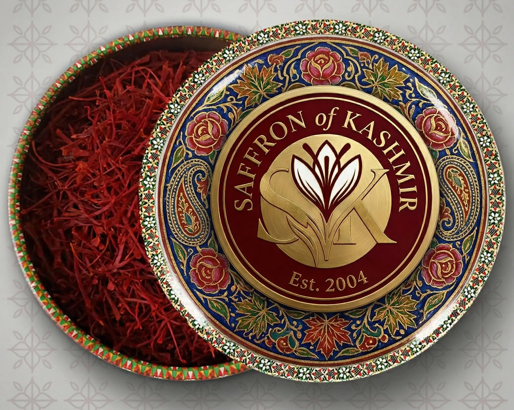
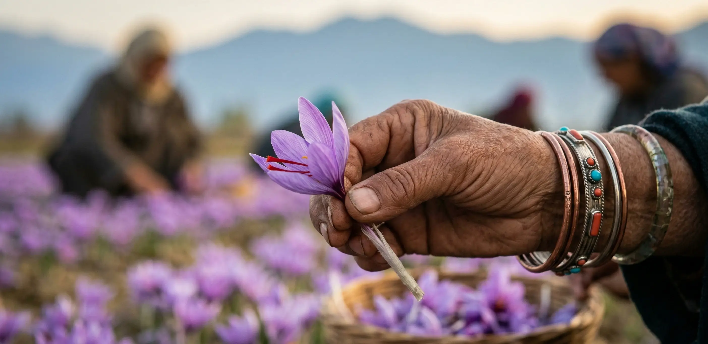
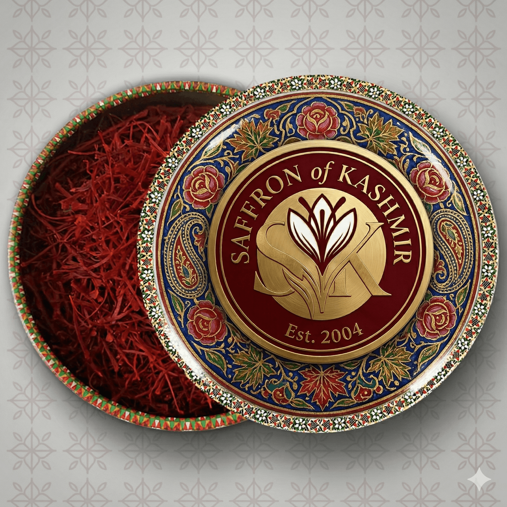
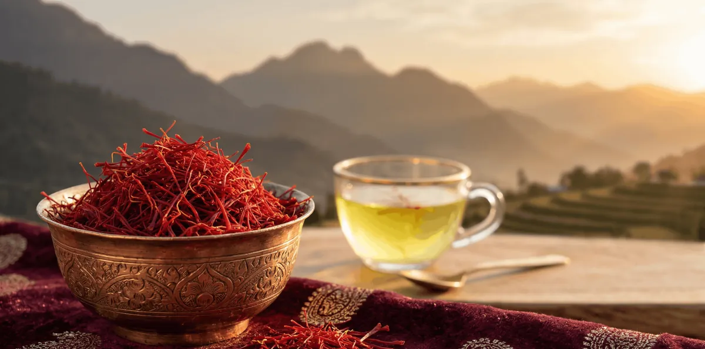

2gRoyal Mongra — 2g
Perfect introduction to genuine Mongra grade. 15–20 servings of tea or rice.
AED 65 / tin
Order on WhatsApp
Only the crimson stigma tips — lab-tested to ISO 3632 Grade A, packed at origin, and delivered anywhere in the UAE within 48 hours.

Only the crimson stigma tips — never the yellow style. The most potent grade of Kashmiri saffron.
No middlemen. We source directly from partner farming families in Pampore, J&K — harvested and packed within 48 hours.
Every batch tested for crocin, picrocrocin, and safranal per ISO 3632 Grade A. Certificate available on request.
Order via WhatsApp, receive your saffron within 48 hours anywhere in the UAE. Free delivery over AED 120.
Three sizes. One uncompromising grade. Hand-packed in our signature collector's tin.

2gPerfect introduction to genuine Mongra grade. 15–20 servings of tea or rice.

5gFor the serious saffron lover. 80–100 servings. Gift-worthy collector's edition tin.
Our largest tin. Best value for restaurants, gifting, or the dedicated home chef.
Tap any order button — your message is pre-filled with the product name. Tell us your delivery address in the UAE.
We confirm availability, total price, and payment details on WhatsApp, then dispatch the same day.
Your saffron arrives sealed in its airtight tin, anywhere in the UAE. Free delivery on orders over AED 120.

Deep in the Karewa plateau of Pampore — just south of Srinagar — the saffron crocus has bloomed every October for over 700 years. Pampore produces 90% of India's saffron, and its terroir is irreplaceable: clay-rich, well-drained soil, sharp autumn nights, and dawn mists from Dal Lake.
Mongra is the highest grade of Kashmiri saffron — only the deep-red stigma tips, separated by hand from the yellow style. Just 3 stigmas per flower; roughly 150,000 flowers for one kilogram. We have sourced Mongra grade exclusively since 2004, working directly with farming families who have tended these fields for generations.
“The colour alone tells you it's real. I've been buying Kashmiri saffron for 20 years — this is the finest I've had.”
“Ordered at 9pm, arrived next day. The aroma filled my kitchen from across the room. I will never go back to supermarket saffron.”
“I use it in our restaurant's biryani. Our guests specifically ask what saffron we use. Worth every dirham.”
Orders are dispatched the same day and delivered anywhere in the UAE within 48 hours. Delivery is free on orders over AED 120.
Tap any "Order on WhatsApp" button, send us the pre-filled message, and we confirm your order, delivery address, and payment on WhatsApp. There is no minimum order.
Every batch is lab-tested to ISO 3632 Grade A standards for crocin, picrocrocin, and safranal. A lab certificate is available on request — and you can verify it yourself with three simple at-home tests.
Keep the tin airtight, away from light and humidity. Stored correctly, Mongra saffron keeps its potency for 36 months.
8–15 threads is enough for most recipes serving 2–4 people. Always bloom the threads in warm (not boiling) liquid for 10–20 minutes first — see our recipes for exact amounts.
Questions about products, bulk orders for restaurants, or corporate gifting? Reach us directly — we reply fastest on WhatsApp.